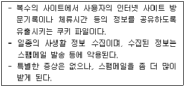

PC정비사-2급 (2019-05-19 기출문제)
1과목: PC유지보수
1. 합법적으로 소유하고 있던 사용자의 도메인을 탈취하거나 도메인 네임 시스템 (DNS)의 주소를 변조함으로써 사용자들로 하여금 진짜 사이트로 오인해 접속하도록 유도한 뒤 개인 정보를 훔치는 컴퓨터 범죄 수법은?
- 혹스(Hoax)
- 드롭퍼(Dropper)
- 파밍(Pharming)
- 하이재커(Hijacker)
(정답률: 89%)

2. 운영체제의 발전 과정 중 시기적으로 가장 최근에 적용된 시스템은?
- 분산 처리(Distributed Processing) 시스템
- 다중 프로그래밍(Multi Programming) 및 시분할(Time Sharing) 시스템
- 다중 모드(Multi Mode) 시스템
- 일괄 처리(Batch Processing) 시스템
(정답률: 84%)
3. 운영체제에서 기억장치를 관리하기 위한 전략 중에서 배치(Placement) 전략에 해당되지 않는 기법은?
- 요구 반입 (Demand Fetch) 기법
- 최초 적합 (First Fit) 기법
- 최적 적합 (Best Fit) 기법
- 최악 적합 (Worst Fit) 기법
(정답률: 91%)
4. Windows에서 발생되는 인터럽트(Interrupt)의 종류가 아닌 것은?
- 상태 전이 인터럽트
- 슈퍼바이저 콜 인터럽트
- 재시작 인터럽트
- 입출력 인터럽트
(정답률: 85%)
5. Windows에서 처음 시작할 때 자동 실행되는 프로그램을 수정할 수 있는 곳이 아닌 것은?
- 레지스트리
- msconfig.exe
- 시작 프로그램 폴더
- system.ini
(정답률: 85%)
6. Bench Mark Test의 정의로 올바른 것은?
- Virus에 감염되기 쉬운 정도를 구분하기 위한 보안 점검으로 A, B, C, D 네 등급으로 나뉜다.
- 하드웨어나 소프트웨어의 개발 단계에서 상용화하기 전에 실시하는 제품 검사 작업으로, 선발된 잠재 고객으로 하여금 일정 기간 무료로 사용하게 한 후에 나타난 여러 가지 오류를 수정, 보완한다.
- 비교 대상을 두고 하드웨어나 소프트웨어의 성능을 비교 시험하고 평가하는 것을 말한다.
- System의 각 장치의 Error 발생 여부를 확인하는 것으로 시스템의 개발 초기 단계에서 이루어진다.
(정답률: 80%)
7. 리눅스에서 'test'라고 하는 파일 내에 'ICQA'라는 단어를 찾기 위한 명령은?
- grep test ICQA
- grep ICQA test
- find-name ICQA test
- find-name test ICQA
(정답률: 80%)
8. 다음에서 설명하고 있는 바이러스/악성코드는?

- 악성쿠키
- 애드웨어
- 하이재커
- 트로이 목마
(정답률: 90%)
9. Windows 7 Professional에 기본적으로 포함되어 있으며 스파이웨어 및 그 밖의 원치 않는 소프트웨어로부터 컴퓨터를 보호할 수 있게 해주는 소프트웨어의 이름은?
- Avast
- BITDEFENDER
- ICF(Internet Connection Firewall)
- Windows Defender
(정답률: 89%)
10. 여러 개의 작업을 하나로 묶어 자동적으로 한 작업에서 다른 작업으로 연속될 수 있도록 한 처리방식은?
- 개별처리방식
- 일괄처리방식
- Job By Job방식
- 시분할 시스템
(정답률: 92%)
11. 가상 기억 장치의 페이징 기법에서 사용되는 주소 변환의 종류가 아닌 것은?
- Direct Mapping
- Associative Mapping
- Associative/Direct Mapping
- High Speed Mapping
(정답률: 85%)
12. 음성을 위한 압축 포맷에 해당하지 않는 것은?
- OGG
- AVI
- VQF
- MP3
(정답률: 87%)
13. 하드디스크를 오래 사용하다보면 파일이 여러 곳에 산재하게 되는데, 이런 파일들을 모아 디스크 액세스 속도를 향상시켜주는 시스템 도구는?
- 디스크 검사
- 디스크 조각 모음
- 디스크 에러 전송
- 디스크 공간 늘림
(정답률: 94%)
14. Windows 7 에서 현재 사용하고 있는 컴퓨터의 가상 메모리를 변경하고 싶다. 이 때 사용할 수 있는 Windows 제어판에서의 항목은?
- 모양 및 개인 설정
- 사용자 계정
- 시스템 및 보안
- 프로그램
(정답률: 85%)
15. 물리적인 하나의 하드디스크를 용량에 따라 여러 개의 논리적 하드디스크 드라이브로 분할하는 것을 뜻하는 용어는?
- 스핀들 (Spindle)
- 로우레벨 포맷 (Low-level Format)
- 파티션 (Partition)
- 하드디스크 인터리브 (Hard Disk Interleave)
(정답률: 93%)
2과목: PC운영체제
16. 네트워크 어댑터 카드에는 데이터 이동 속도의 향상을 위하여 다양한 형태의 방법을 사용하고 있다. 다음 중 이러한 방법이 아닌 것은?
- 직접 메모리 액세스(DMA)
- 공유 시스템 메모리
- 프레임 릴레이
- 버스 마스터링
(정답률: 69%)
17. 다음은 전자 악기간의 디지털 신호에 의한 통신 또는 컴퓨터와 전자 악기간의 정보를 교환하기 위해 결정된 국제 표준 규약인 MIDI를 설명한 것이다. 잘못된 것은?
- 기본적으로 4채널을 사용하여 각 악기의 상태나 컨트롤 등을 전달한다.
- MIDI는 Musical Instrument Digital Interface의 약어이다.
- 별도의 인터페이스 카드가 필요하며 PC 사운드 카드에서 기본적으로 인터페이스를 지원한다.
- General MIDI는 사운드 폰트 MIDI에서 사용하기 위한 소리를 담는 데이터를 의미한다.
(정답률: 74%)
18. CPU에서 부동소수점 연산장치인 FPU(Float Point Unit)의 성능이 중요한 이유는?
- 워드프로세서 프로그램을 많이 사용하기 때문에
- 데이터베이스 프로그램을 많이 사용하기 때문에
- 3D 프로그램을 많이 사용하기 때문에
- 인터넷을 많이 사용하기 때문에
(정답률: 76%)
19. 웜부팅(Warm-Booting)에 관한 설명으로 올바른 것은?
- 자체 진단 과정을 수행하지 않는다.
- 컴퓨터에 전기적 충격이 쿨부팅(Cool-Booting)에 비해 크다.
- 쿨부팅보다 부팅속도가 느리다.
- 전원스위치를 껐다 켜야 한다.
(정답률: 78%)
20. 레이저 프린터에 대한 설명 중 올바른 것은?
- 출력 속도는 CPS 단위로 표시한다.
- 해상도 단위는 PPM으로 표시한다.
- 해상도는 엔진 해상도와 에뮬레이션 해상도로 나뉘며 실제 필요한 것은 에뮬레이션 해상도이다.
- 자체적인 Processor와 Memory를 가지고 있다..
(정답률: 73%)
21. 전용 비디오 메모리의 종류가 아닌 것은?
- VRAM
- SDRAM
- WRAM
- DDRSGRAM
(정답률: 71%)
22. 다음 중 이론적으로 가장 빠른 속도를 내는 방식은?
- IEEE-1394
- USB 3.0
- USB-OTG
- USB 2.0
(정답률: 86%)
23. 한글 3벌식 자판에 대한 설명으로 올바른 것은?
- 2벌식에 비해 키의 개수가 적다.
- 자음 한 벌, 모음 한 벌, 받침 한 벌로 이루어져 있다.
- 우리나라의 표준 자판이다.
- 입력 속도가 2벌식에 비해 느려 대중화에 실패하였다.
(정답률: 79%)
24. 하드디스크 포맷 후 Windows에 나타나는 전체 사용 가능한 용량이 제조사 표시 용량과 약간 차이가 있다. 주된 이유로 타당한 것은? (단, 바이오스의 설정은 모두 정상적으로 되어 있다.)
- 하드디스크 자체의 오류이다.
- 제조업체는 1KB=1000Byte로 계산하나 실제로는 1024Byte이기 때문이다.
- 하드디스크를 포맷하면 하드디스크 정보를 기록하기 위해 하드디스크 일부를 사용하기 때문이다.
- 하드디스크 케이블을 잘못 연결해 데이터가 롬 바이오스에 잘못 인식되었다.
(정답률: 89%)
25. 고용량의 HDD를 제작하기 위한 기술 중에 자장의 척력(밀어내는 힘)을 이용하여 근접한 트랙을 동시에 읽어내는 것은?
- MR(Magneto Resistive)
- RLL(Run-Length Limited)
- MF(Meta Finder)
- LBA(Logical Block Addressing)
(정답률: 84%)
26. CPU의 구조 중 임시저장 장소는?
- Registor
- ALU
- CU
- FTU
(정답률: 81%)
27. RAM에 대한 설명 중 잘못된 것은?
- DDR2-SDRAM은 데이터 입출력수가 DDR-SDRAM의 2배이며, 240핀 슬롯에 장착하여 사용한다.
- DDR-SDRAM과 RDRAM은 같은 보드에 동시에 설치하여 사용할 수 없다.
- RDRAM은 SDRAM과 핀 수가 같기 때문에 SDRAM을 장착할 수 있는 메인보드의 소켓에 장착이 가능하다.
- SRAM은 데이터 기록속도가 매우 빨라 CPU의 캐시 메모리로 이용되고 DRAM은 속도가 다소 느리지만 대용량의 메모리로 이용된다.
(정답률: 72%)
28. 드라이브의 크기가 같은 하드디스크도 종류별로 용량이 다양하다. 드라이브의 크기가 같아도 하드디스크의 용량을 늘릴 수 있는 이유로 올바른 것은?
- 헤드와 플래터의 간격을 좁혀 플래터의 단위면적당 기록밀도를 높인다.
- 스핀들 모터의 회전속도를 점점 빠르게 만든다.
- 하드디스크의 회전 시 발생하는 열을 줄인다.
- 헤드의 접근속도를 높여 용량을 커지게 한다.
(정답률: 74%)
29. 컴퓨터 시스템에서 메인보드를 관리하는 제어 소프트웨어는?
- CACHE
- BUS
- BIOS
- CPU
(정답률: 87%)
30. 음향신호 합성을 위한 방법은 PCM(Pulse Code Modulation)과 FM(Frequency Modulation) 방식이 있다. 이에 대한 설명으로 잘못된 것은?
- PCM : 아날로그-디지털 변환기와 디지털-아날로그 변환기를 이용하여 소리를 녹음, 재생하는 방법이다.
- PCM : 샘플링 주파수가 높을수록 디스크의 저장 공간이 줄어드는 장점이 있다.
- FM : 물체의 진동에 의한 파형을 미리 기억시켜 놓은 후, 이 파형을 직접 조작해 새로운 소리를 만들어 내는 방식이다.
- FM : 주파수 변조 방식의 합성 회로를 이용하여 악보의 음표에 해당하는 악기음을 재생한다.
(정답률: 77%)
3과목: PC주변기기
31. EIDE 방식에 대한 설명 중 잘못된 것은?
- 40핀 케이블을 사용한다.
- 지원 용량은 무제한이다.
- 최대 전송속도는 8.33MB/s 이다.
- Fast-ATA와 같은 원리로 동작한다.
(정답률: 68%)
32. CPU 오버클러킹을 위해 메인보드에서 제공하는 기능으로 잘못된 것은?
- FSB를 1MHz 단위로 설정할 수 있는 지 점검해야 한다.
- 오버클럭킹을 하기 위해서는 오버클럭킹이 가능한 CPU, 적절한 대역폭을 가진 RAM, 오버클럭킹을 지원하는 메인보드가 필수적이다.
- AGP/PCI 클럭을 CPU 동기식으로 설정할 수 있는 메뉴가 제공되는지 살펴보아야 한다.
- CPU 코어와 메모리 전압을 변경할 수 있는지 살펴보아야 한다.
(정답률: 66%)
33. Windows를 사용하던 중 “KERNEL32.DLL에서 잘못된 연산이 수행되었습니다.”라는 메시지가 나타나는 이유로 잘못된 것은?
- 어플리케이션간 메모리 충돌이 일어날 때
- KERNEL32.DLL의 버전이 다르거나 손상된 경우
- CPU와 메모리의 FSB가 맞지 않을 경우
- 메인 메모리가 불량인 경우
(정답률: 61%)
34. NTFS 파일 시스템을 FAT32 파일 시스템으로 변환하는 방법으로 올바른 것은?
- convert 명령어를 사용해 FAT32 파일 시스템으로 변환 한다.
- "format 드라이브명 /fs:fat32" 을 사용하여 드라이브를 다시 포맷한다.
- NTFS 파일 시스템을 사용하는 파티션부터 삭제한다.
- "del 드라이브명 /ntfs" 명령을 사용하여 NTFS 파일 시스템을 삭제한다.
(정답률: 67%)
35. 각종 모니터의 조정검사 및 수리에 적합한 시험 도형을 만들어 내는 발생기는?
- Pattern Generator
- Color Analyzer
- DVM(Dalvik virtual machine)
- Oscilloscope
(정답률: 71%)
36. CPU가 CAS/RAS 에 신호를 보내어 메모리의 정보가 도착할 때까지의 시간을 나타내는 용어는?
- Lead
- Delay
- Latency
- Integrity
(정답률: 82%)
37. 전자파에 관련된 인증 마크가 아닌 것은?
- EMC
- FCC
- CE
- KGMP
(정답률: 75%)
38. PnP 장치가 관리하지 않는 것은?
- DMA 채널
- TCP 포트
- IRQ
- 입출력 Address
(정답률: 77%)
39. 로우레벨 포맷에 대한 설명으로 잘못된 것은?
- 물리적인 상태는 그대로 둔 채 논리적인 포맷만을 하므로 시간이 짧게 걸린다.
- 백신 프로그램이나 포맷으로도 바이러스가 잡히지 않을 경우 진행한다.
- BIOS 설정에 로우레벨 포맷 기능이 있는 경우, 그것으로 수행하거나 별도의 프로그램을 이용한다.
- 로우레벨 포맷을 통해 디스크의 배드 섹터와 같은 물리적 결함은 복구되지 않을 수도 있다.
(정답률: 80%)
40. 오디오 채널에 대한 설명 중 잘못된 것은?
- 5.1채널에서 센터, 전방좌우, 후방좌우는 각각 1채널을 갖는다.
- 5.1채널에서 서브우퍼는 저음신호를 담당하며, 0.1채널을 갖는다.
- 외부 앰프가 필요한 서브우퍼를 액티브 서브우퍼라 부른다.
- 최근 6.1채널, 7.1 채널까지 확장된 규격이 출시되고 있다.
(정답률: 78%)
41. PC에서 발생하는 전자파나 누전을 방지하기 위한 방법으로 잘못된 것은?
- 접지 콘센트를 이용하여 접지를 한다.
- 전자파 차단 효과가 있는 모니터 보안경이나 PC 케이스를 사용한다.
- 모니터의 화면재생빈도를 조절한다.
- 굵은 도선을 이용하여 접지한다.
(정답률: 81%)
42. 현재 사용 중인 컴퓨터의 RAM 용량을 확장하려고 한다. 다음 중 RAM 확장 시 주의할 점에 대한 설명으로 잘못된 것은?
- DDR3-SDRAM의 경우 메인보드의 뱅크 번호가 높은 숫자부터 순서대로 RAM을 설치하여야 정상 동작이 가능하다.
- 동작 클럭이 다른 두 개의 RAM을 설치하여 사용해도 되나 실제 동작은 클럭이 낮은 RAM에 맞추어 동작된다.
- DDR2-SDRAM인 경우 홀수로 설치해도 정상작동된다.
- RAM은 꽂아 주기만 하면 인식이 자동으로 되어 별도의 프로그램 설치가 요구되지 않는다.
(정답률: 74%)
43. 부팅할 때 “Bad or missing Command Interpreter”라는 메시지가 나올 경우, 예상되는 에러 및 조치는?
- 드라이브에 부팅 가능한 디스크가 없는 경우로 부팅 가능한 디스크로 재부팅한다.
- command.com 파일이 깨졌거나 없어진 경우로 파일을 복사해 준다.
- 롬 칩이 고장 난 경우로 CMOS 설정을 확인하고 재설정한다.
- 하드디스크의 부트 영역이 손상된 것으로 다시 포맷한다.
(정답률: 79%)
44. Windows 환경에서 그래픽 편집 소프트웨어를 사용하려하는데 시스템의 수행속도가 느리다. 사용자가 고려해야 할 항목으로 볼 수 없는 것은?
- RAM을 증설한다.
- CPU를 업그레이드한다.
- 그래픽카드를 업그레이드한다.
- ODD를 고속 지원하는 것으로 교체한다.
(정답률: 79%)
45. PC의 이상 현상과 그 현상의 원인이나 대책으로 잘못된 것은?
- 모니터에 아무 것도 나오지 않는다. - VGA 카드와 모니터간의 연결 케이블을 점검해본다.
- 하드디스크에 배드 섹터가 생겼다. - 하드디스크 동작 중 충격을 주면 배드 섹터의 원인이 될 수 있다.
- 사운드 카드에서 소리가 나지 않는다. - 사운드 카드 드라이브가 설치되어 있지 않다.
- Windows 7에서 ALT 키를 누르면 한/영 전환이 된다. - 키보드와 본체와의 연결 상태를 점검해 본다.
(정답률: 79%)
4과목: PC네트워크
46. 두 대의 컴퓨터에 직렬 포트를 이용하여 마치 모뎀으로 접속되어 있는 것처럼 동작하게 하는 연결법을 뜻하는 것은?
- Micom Networking Protocol
- FAX Modem
- Universal Asynchronous Receiver & Transmitter
- Null Modem
(정답률: 73%)
47. 네트워크의 사용목적과 거리가 먼 것은?
- 다른 컴퓨터의 디스크나 프린터 등의 자원 공유
- 다른 컴퓨터와 데이터 파일을 공유
- 다른 컴퓨터와 보안을 유지
- 컴퓨터 사이에서 전자 우편을 교환
(정답률: 84%)
48. 광케이블과 비교했을때 UTP 케이블에 대한 설명으로 잘못된 것은?
- PC용 네트워크에 가장 보편적으로 사용하는 방식이다.
- 전기적인 간섭을 줄이기 위해 쌍으로 꼬이게 하여 전자적 유도 현상을 줄인 케이블이다.
- 가격이 싸고 설치가 간단하다.
- 잡음에 강하며 전송 거리가 길다.
(정답률: 74%)
49. 네트워크 장비 중 분배의 기능을 가지고 있으며, 여러 대의 PC를 서로 연결 해주는 장비는?
- 허브
- LAN카드
- 모뎀
- 케이블
(정답률: 86%)
50. 인터넷 계층의 일부로서 제어 기능 및 오류 보고를 수행하는 기능은?
- TCP/IP
- BGP
- ARP
- ICMP
(정답률: 65%)